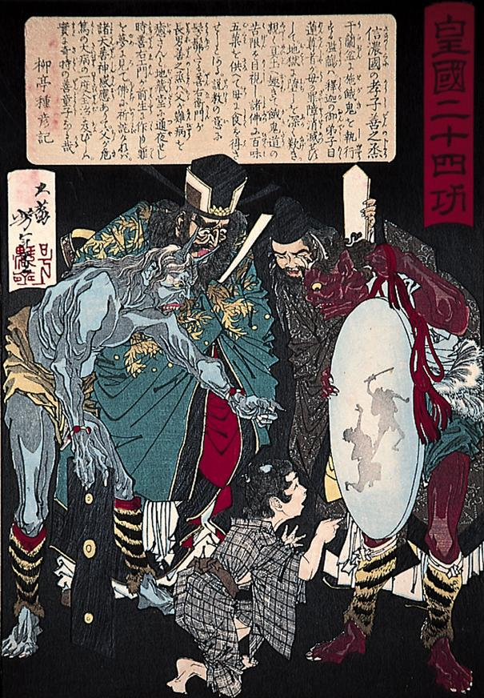

浄玻璃の鏡を持つ赤鬼。頭髪は黒く縮れている。水色の上衣と緑の腰巻、虎皮の脚絆を身に付けている。
著作者：月岡芳年／出典：親書誌：A80_prague_0009：皇国二十四功 信濃国の孝子善之丞；ココクニジュウシコウシノノクニノコウシゼンノジョウ／日付：2011／資源識別子：A80_prague_0009_0001_0000
Copyright (c)2010- International Research Center for Japanese Studies, Kyoto, Japan. All rights reserved.